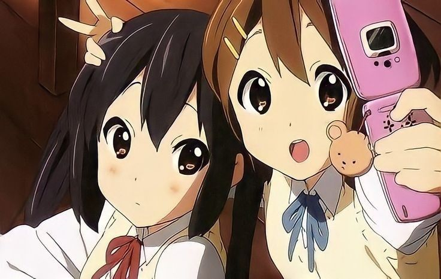
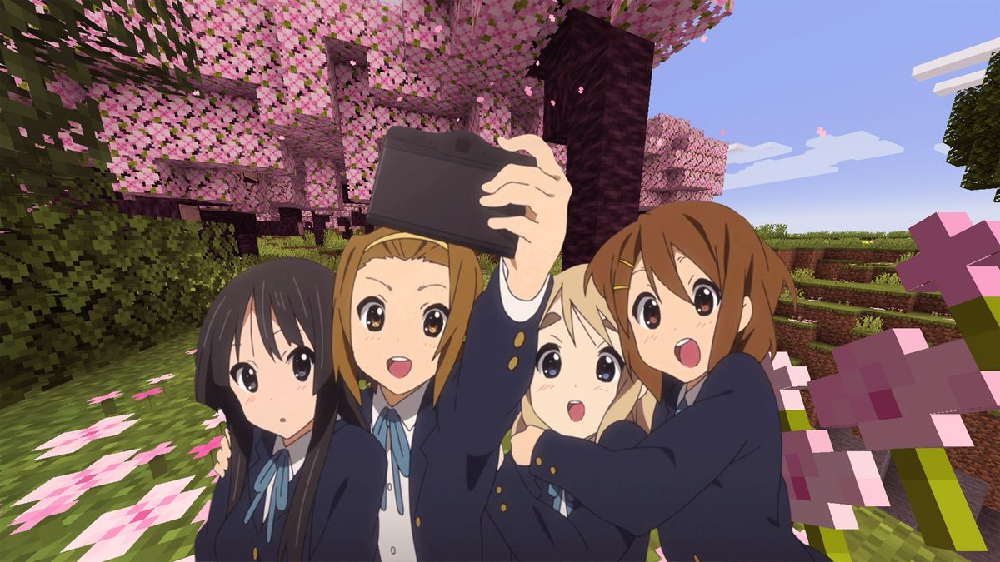
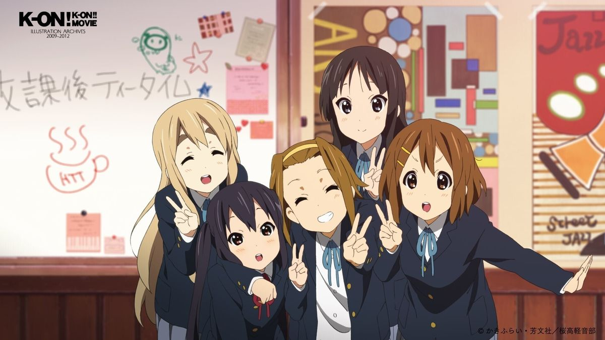

K-ON!
Memory Archive
Теплая история о музыке, дружбе и моментах,
которые остаются с тобой даже спустя годы.


Навсегда в памяти
K-ON! — это не просто аниме о музыке. Это история о моментах, которые согревают душу даже спустя годы.
🎸 Легкость и уют
K-ON! не пытается удивить драмой — это аниме про атмосферу, теплые вечера, чай после репетиций и настоящую дружбу.
☁️ Живые персонажи
Каждая участница клуба ощущается живой: от хаотичной Юи до спокойной Мио. Со временем они начинают восприниматься как реальные друзья.
🎀 Незабываемый саундтрек
Музыка в K-ON! — огромная часть атмосферы. После просмотра многие песни буквально остаются в голове неделями.
🌸 Kyoto Animation
Аниме создано студией Kyoto Animation, известной своей невероятно теплой анимацией и вниманием к деталям.

| Участница | Инструмент | Статус |
|---|---|---|
| 🎸 Юи Хирасава | Вокал / Гитара | Online |
| 🎸 Мио Акияма | Бас-гитара / Бэк-вокал | Online |
| 🎹 Рицу Таинака | Ударные | Online |
| 🎤 Муги (Цумуги Котобуки) | Клавишные | Online |
| 🎸 Адзуса Накано | Гитара (ритм) | Online |
Знаете ли вы? Название группы «HTT» (After School Tea Time) отражает главную традицию клуба — пить чай после репетиций!